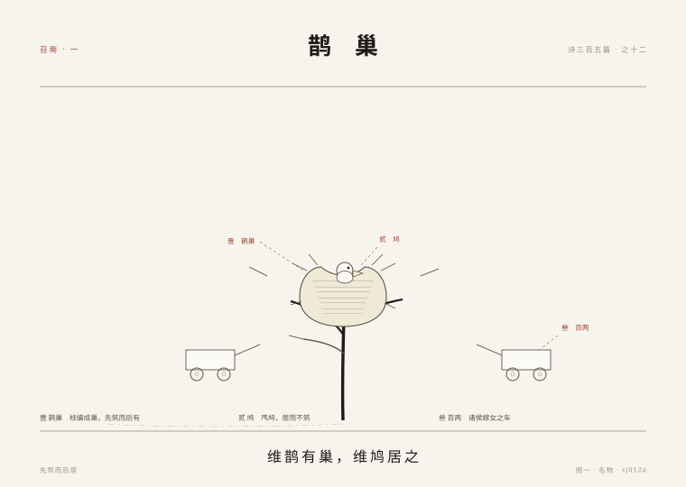
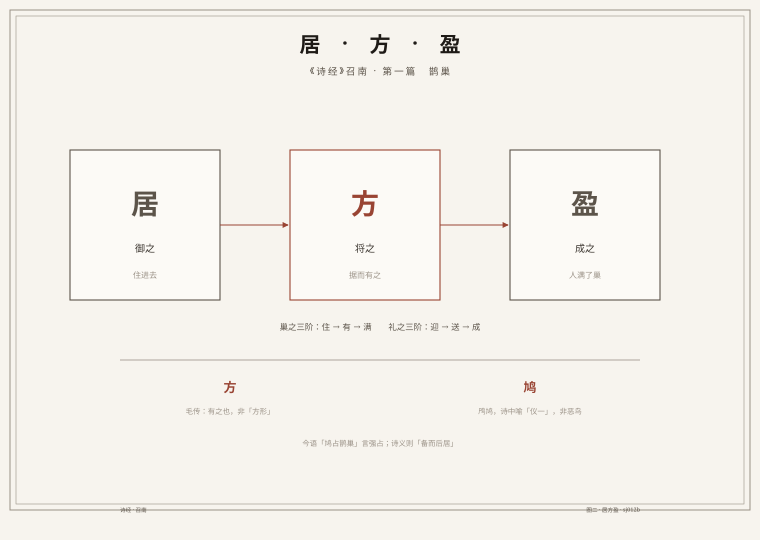

第十二篇 鹊巢
召南 · 之一 SJ012
朗读 · 普通话
依经文正文朗读，句读从文；不配乐、不改速、不加拖腔。全库同一音色（豆包 TTS），非播音员录制。
一 解题
诗三判：
- 谁在说：一个看婚礼的人。他不叙事，只报两件事——巢怎样，车怎样。
- 说什么事：鹊把巢筑好了，鸠住进去；女子要出嫁了，百辆车迎来送往。两件事并着说，说的是同一件事。
- 为何编在此：《周南》以《关雎》求配始，以《麟之趾》公族终；《召南》开头不讲求，讲「成」——家已经备好，人住进去。周南写「怎样走到一起」，召南开篇写「已经在一起」。
《毛序》：「《鹊巢》，夫人之德也。国君积行累功，以致爵位，夫人起家而居有之，德如鸤鸠，乃可以配焉。」——把鸠读作「夫人」，把巢读作「国君之宫」。
朱子《诗集传》：「诸侯之子嫁，以百乘之车……言其迎送之盛。」——朱子把重点落在「百两」上，看作婚礼的盛况。
本库的看法：这首诗的主角不是鸠，是巢。
鹊先筑，鸠后居——全篇赞的是「备」：一个家先被筑成，才有人住进来。今人说「鸠占鹊巢」是强占，而《诗》里正相反：那是「有备而后居」。
二 经文
第一章
维鹊有巢，维鸠居之。之子于归，百两御之。
第二章
维鹊有巢，维鸠方之。之子于归，百两将之。
第三章
维鹊有巢，维鸠盈之。之子于归，百两成之。
分章：毛传、朱子皆三章，章四句。三章只换四个字：居／方／盈，御／将／成。前四字说巢，后四字说车——一半是家，一半是礼。
三 韵读
| 一 |
居、御 |
魚部 |
| 二 |
方、将 |
陽部 |
| 三 |
盈、成 |
耕部 |
三章三换韵：魚沉、陽开、耕收。由沉到开再到收，正合一场婚礼的起、盛、成。
四 字义名物
- 维——发语词，无实义。
- 鹊——喜鹊。善筑巢，巢成而后有鸠来。
- 鸠——鸤鸠（shī
jiū），即布谷。《毛传》「鸠，鸤鸠，秸鞠也」。它自己不筑巢，产卵于他鸟之巢。
- 居——住。
- 方——占有、据有（《毛传》「方，有之也」）。不是「方形」。
- 盈——满。鸠与雏充满巢中。
- 之子——这位女子。
- 于归——出嫁。归，女子以夫家为归。
- 百两——百辆车。两，同「辆」。《毛传》「百两，百乘也」。
- 御（yà）——迎。迎亲。
- 将——送。
- 成——成婚。
五 今译
第一章
喜鹊筑好了巢，布谷住进去。这位女子要出嫁，一百辆车来迎她。
第二章
喜鹊筑好了巢，布谷占有了它。这位女子要出嫁，一百辆车送她。
第三章
喜鹊筑好了巢，布谷住满了它。这位女子要出嫁，一百辆车成其礼。
译注：「御」译「迎」，「将」译「送」，「成」译「成其礼」——三字是婚礼的三个动作，不作「抵御」「率领」「成功」解。
六 章旨
一章：居。住进去。巢是现成的，人是新来的。
二章：方。据而有之。由「住」到「是这里的人」。
三章：盈。满。人满了，后来还有雏。由一人到一家。
而车的三字与之相配：御（迎）、将（送）、成（成礼）。巢的三阶是「住—有—满」，礼的三阶是「迎—送—成」。
两列并走，一章一步。
七 诗教
- 兴：以鹊巢鸠居起兴，所兴即所咏——备而后居，与嫁而后家，同一理。
- 观：可观一「备」。此篇赞的不是鸠的得，是鹊的筑。人只见鸠居，不见鹊劳。
- 群：一族之婚，非一人之事。百两之众，是「群」的规模。
- 怨：无怨。全篇无一句议鸠，无一句讥鸠——今人读出的「强占」，是后人加的。
八 分寸与边界
- 不可用今语「鸠占鹊巢」读此诗。今语指强占，诗义是「备而后居」的婚嫁之喻。以今义逆推，全篇立刻变成讽刺诗——而诗中无一句讥刺。
- 不可把鸠读作恶鸟。鸤鸠在《诗》中是「仪一」的象征（《曹风·鸤鸠》「其仪一兮」），非恶类。
- 不可把「方」解作「方形」「方正」。毛传「方，有之也」，是据有。
- 不可把「百两」坐实为实数一百辆。毛传说是百乘，乃诸侯嫁女之制；诗中取盛，不必核数。
- 不可把此篇读成「夫人德配其位」的政治寓言。《毛序》之说可存为解释史，诗里只有巢、鸠、车。
九 存疑
- 鸠为何鸟：鸤鸠即布谷（一说鳲鸠、杜鹃类），古人以其「不自为巢」为说。本库从毛传，不更考物种。
- 「方」之训：一说「有之」（毛传），一说「并」（并居），一说「据」。义皆近「占有」，本库取毛传。
- 是否为美诸侯之女：一说美「夫人之德」，一说美嫁女之盛。本库取后者：诗在婚礼，不在妇德。
- 百两是否实指：一说百乘为诸侯之制，一说夸饰。本库取「取盛不核数」。
- 召南与周南之别：周南多「求」与「思」，召南多「成」与「备」。此说为本库读法，非定论。
十 跨典
- 《曹风·鸤鸠》「鸤鸠在桑，其子七兮。淑人君子，其仪一兮」——鸤鸠在《诗》中喻「均一」，与本篇的鸠同一物而两义，可见《诗》用物之活。
- 《召南·采蘩》「于以采蘩？于沼于沚」——同卷，夫人奉祭祀之事；召南开篇两诗，一婚一祭，是「家」的两根柱子。
- 《卫风·氓》「以尔车来，以我贿迁」——同是婚车，彼为私奔之约，此为百两之礼；车同而礼异。
- 《仪礼·士昏礼》——六礼之制：纳采、问名、纳吉、纳征、请期、亲迎。此篇「御、将、成」正合亲迎与成礼两端。
- 《礼记·昏义》「昏礼者，将合二姓之好，上以事宗庙，而下以继后世也」——「继后世」三字，正与本篇末章的「盈」相应。
十一 双卡与图
双卡五对：
| 鹊（筑者） |
鸠（居者） |
| 居（住） |
方（据有） |
| 盈（满） |
成（成礼） |
| 御（迎） |
将（送） |
| 巢（家） |
车（礼） |

图一 · 鹊巢鸠居 名物图

图二 · 居·方·盈 义理图
读图三处：
- 巢在树上，枝为骨：鹊巢不是碗，是用枝一根压一根编出来的。图下部枝条交错，才见「筑」的功夫——此篇赞鹊，就在这堆枝里。
- 鸠在巢中，只露一头：鸠不必画全。全篇写它三个字（居、方、盈），图也只须它在巢里。
- 车在树下，不在画面正中：百两是背景，不是主角。把车画大了，诗就变成夸富。